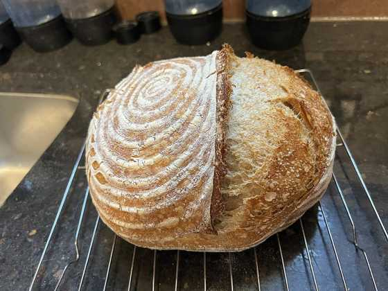
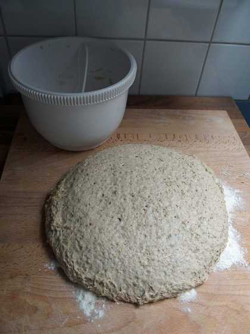
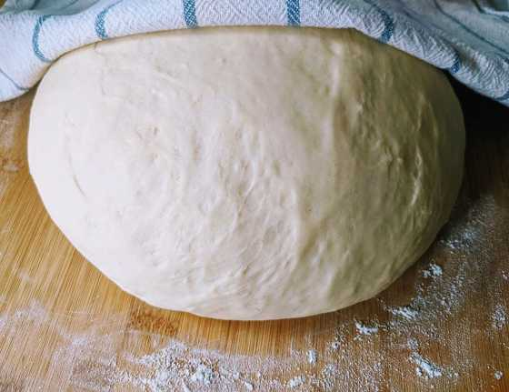
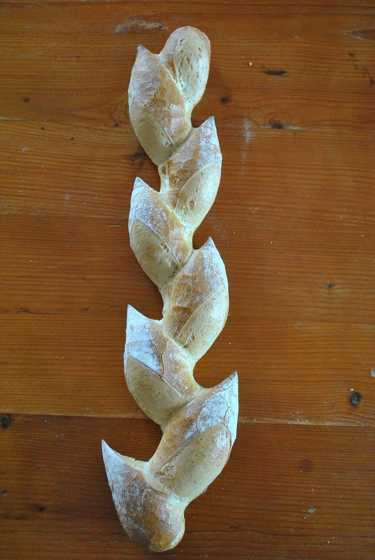
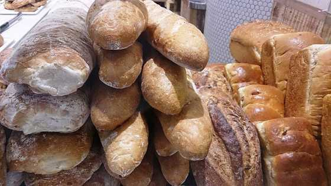
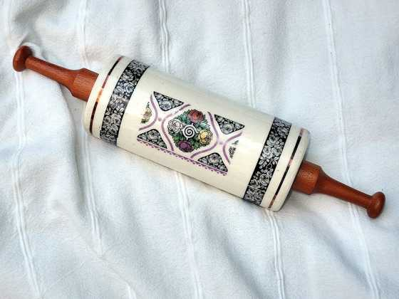

愛知県安城市・福釜町のパン工房
いつもの日々に、
素のままのおいしさを。
自家製酵母とシンプルな材料で焼く、毎日食べたくなるパン。住宅街の一角で、ご近所さんと一緒に味をつくってきたお店です。
お店の由来・想い
近所の人と、味を育ててきたパン工房。
紹介記事によると、キナリは2024年6月に福釜町の閑静な住宅街にオープンした、ご夫婦で営むパン工房です。パンを焼くのは、ベーカリーや製菓学校の講師として約25年の経験をもつ宮本友美さん。自家製酵母と、素材にこだわったシンプルな材料でパンを作っています。
看板の塩パンは、お客さんに試食してもらいながら塩加減を何度も変えて、今の味にたどりついたそうです。ハード系のパンは、近所の方が年齢を問わず楽しめるよう、硬くなりすぎないように。バゲットは材料がシンプルだからこそ、発酵と熟成を大切にしているとのことです。
情報源: キャッチ(2024年の紹介記事)/ごぎゃんネット(2024年の紹介記事)/Instagram
店名「キナリ」の由来は確認できていません。生成り(染めたり漂白したりしない、素材そのままの色)という言葉を、素のままのおいしさになぞらえたのは制作側のイメージです。




パンのこと
塩パン、クロワッサン、ハード系、ドーナツ。
紹介記事で名前が挙がっているパンです。並ぶ品はその日によって変わります。写真はフリー素材のイメージで、お店のパンそのものではありません。
価格: 準備中




口コミ(イメージ例)
こんな声が聞こえてきそうです。
以下は制作側が作成したイメージ例で、実在の方の声ではありません。
イメージ例焼きたての塩パンの香りに、思わず足が止まりました。
イメージ例硬すぎないハード系で、家族みんなで食べられました。
イメージ例住宅街の中にある、ほっとする雰囲気のパン屋さんです。



アクセス
ご案内
| 所在地 | 〒446-0052 愛知県安城市福釜町荒子55−１ |
|---|---|
| 電話 | 準備中 |
| 営業時間 | 準備中 |
| 定休日 | 準備中 |
| 駐車場 | 準備中 |
| @bakery_kinari |
営業日や時間は変わることがあるため掲載していません。ご来店前にInstagramで最新情報をご確認ください。